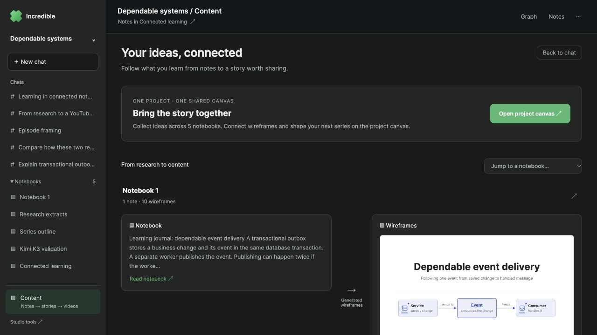
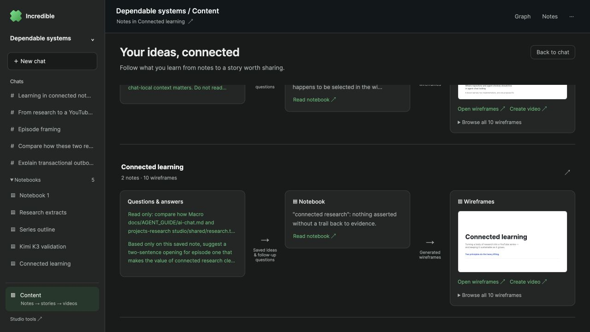
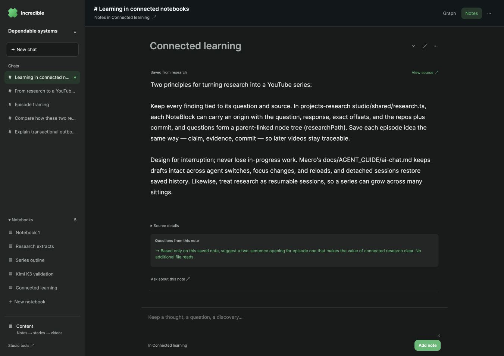
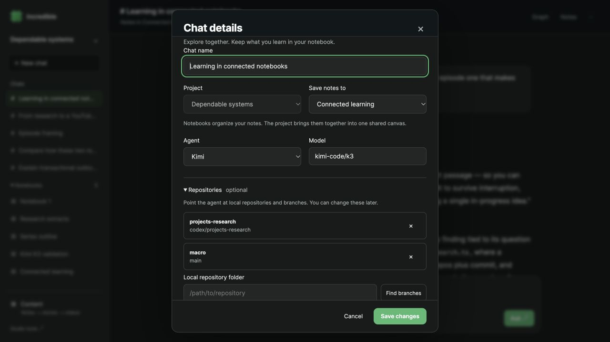
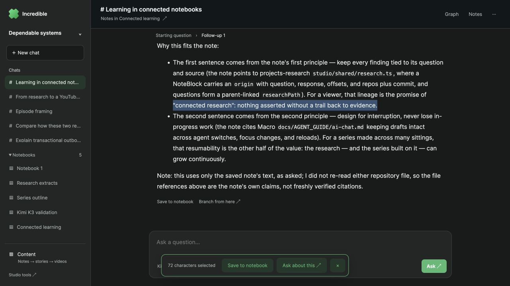
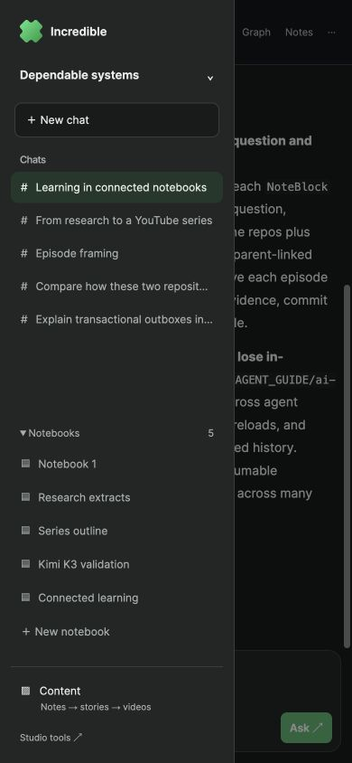

A connected place to learn and create
Visible-browser evidence from the parallel Incredible Studio stack on port 4291. Numbered HTML overlays annotate the original, unmodified screenshots. Real Kimi K3 answers and generated content are shown.
One project, one visual path

123- Chats and notebooks stay in a stable project sidebar. The old row of modes is gone.
- The shared canvas combines the notebooks and opens the series workspace.
- Notebook content and actual generated wireframes are adjacent, with a visible connection.
Real K3 output completes the path

123- Two completed K3 questions, with a real parent/follow-up relationship.
- A selected 72-character excerpt, preserved with its source.
- Ten completed K3 wireframes, with working editor and video entry points.
Documents keep the research connected

12- View source returns to the answer that supplied the saved note.
- Questions from this note opens a real follow-up and its answer. The graph retains the earlier branch.
Choose context once

Project, notebook, agent/model and repository branches are chosen together. Switching chats restores their own choices and unsent drafts.
Keep the useful passage

This 72-character selection was saved from the real K3 follow-up. Its notebook block retains the original question, response, selected offsets and pinned repository context.
Mobile has the same structure

Tested at 390 × 844: navigation collapses, the composer stays reachable, and project/chat setup supports creating the first notebook.
Detailed validation and known limits
No finished video, publishing action, or real-time multi-user collaboration is claimed by these screenshots.